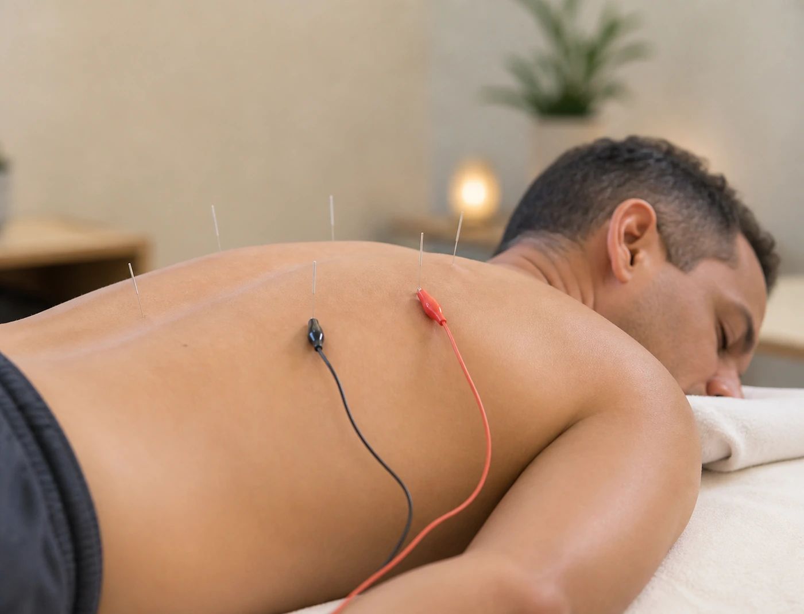

Lower Back Pain · Sciatica · Disc Problems
When your back just won't let up
Back pain has a way of taking over your life. It changes how you sleep, how you move, how you work, and how much patience you have for everything else. If you've been managing it for weeks, months, or years — carrying on while quietly hoping it will sort itself out — you'll know how exhausting that gets.
Acupuncture has been used for back pain for thousands of years, and there is now a growing body of research supporting its use for both acute and chronic back conditions. Treatment aims to ease pain, reduce muscle tension, improve circulation to the affected area, and help your nervous system settle — so your body can do what it's actually trying to do, which is heal.
Every treatment is tailored to you: your posture, your lifestyle, the nature of your pain, and what else is going on in your body and your life.
Book for Back Pain
What acupuncture may help with
- Lower back pain — acute or chronic
- Sciatica and radiating leg pain
- Disc-related pain and lumbar stiffness
- Muscle spasm and tightness
- Back pain related to stress and tension
- Sports injuries and post-exercise recovery
- Pain that makes sleep difficult
- Back pain during pregnancy
Electro-acupuncture is often particularly effective for stubborn or deeper back pain. Cupping may also be used alongside needles to release tight muscles and improve circulation.
"I'd been managing lower back pain for almost two years before I tried acupuncture with Shaul. By the fourth session I was sleeping through the night properly for the first time. His approach is calm and thorough — you feel in safe hands."
— Michael Hendricks, Claremont